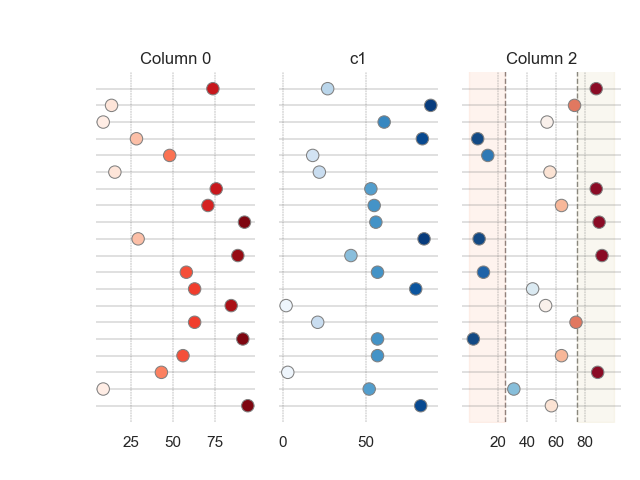

Note
Click here to download the full example code
Graphics TableGraph example
- 
Out:
Data:
c0 c1 c2
0 14 1 43
1 99 22 74
2 7 9 18
3 57 90 81
4 44 21 1
5 62 76 56
6 66 33 26
7 25 77 14
8 78 34 96
9 42 92 44
10 70 80 96
11 76 1 50
12 20 0 2
13 57 85 35
14 38 85 48
15 1 51 90
16 2 8 29
17 49 97 69
18 9 36 76
19 97 84 34
5 import os
6 import sys
7 import json
8 import copy
9 import numpy as np
10 import pandas as pd
11 import seaborn as sns
12 import matplotlib.pyplot as plt
13 import matplotlib.colors as colors
14 import matplotlib.patches as mpatches
15 import matplotlib.gridspec as gridspec
16
17 from scipy import interp
18
19 from matplotlib.colors import ListedColormap
20
21 from pyamr.graphics.table_graph import TableGraph
22
23 """
24
25 Example of axis configuration
26 -----------------------------
27 { 'ax': None,
28 'ax_kwargs': {
29 'title':'Example 1',
30 'xlim':None,
31 'xsym':False,
32 'xticks':None,
33 'xline':[{'xv':0.05, 'bg':-1.0, 'cb':'y'}],
34 },
35 'cmap_kwargs': {
36 'vmin':None,
37 'vmax':None,
38 'vsym':False,
39 'cmap':'RdBu_r',
40 'midpoint':2.5
41 },
42 'scatter_kwargs': {
43 's':80,
44 'linewidths':0.75,
45 'edgecolor':'gray'
46 }
47 }
48 """
49
50 # Create data
51 data = np.random.randint(100, size=(20, 3))
52 dataframe = pd.DataFrame(data)
53 dataframe.columns = ['c0', 'c1', 'c2']
54
55 # Show
56 print("\nData:")
57 print(dataframe)
58
59 # Create column configurations
60 c0 = TableGraph().get_map_config(title='Column 0', cmap='Reds')
61 c2 = TableGraph().get_map_config(title='Column 2', cmap='RdBu_r',
62 midpoint=50, xticks=[20, 40, 60, 80],
63 xline=[{'xv': 25, 'bg': 0}, {'xv': 75, 'bg': 100, 'cb': 'y'}])
64
65 # Create configuration
66 config = {}
67 config['c0'] = c0
68 config[2] = c2
69
70 # Example with a DataFrame
71 axes = TableGraph().plot(data=dataframe, configuration=config)
72
73 # Example with numpy array
74 axes = TableGraph().plot(data=data, configuration=config)
75
76 # Show.
77 plt.show()
Total running time of the script: ( 0 minutes 1.052 seconds)